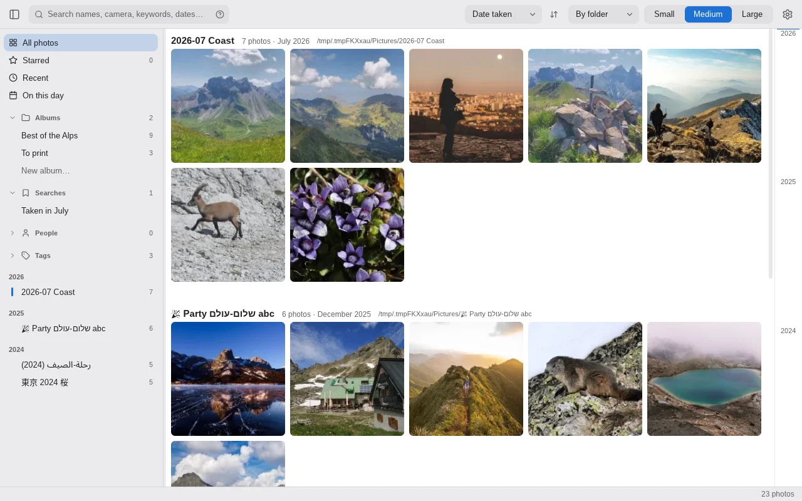
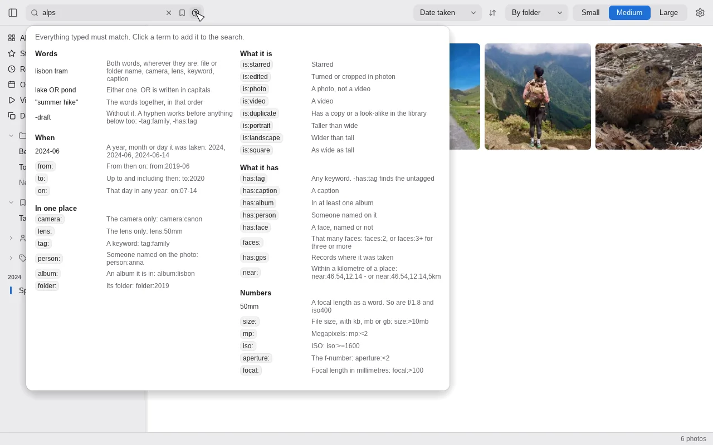
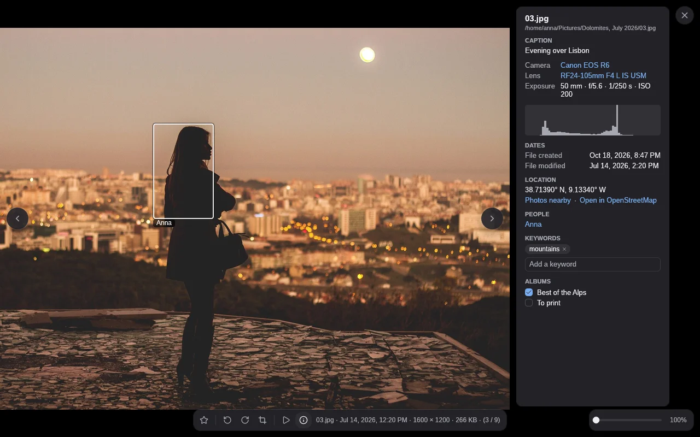
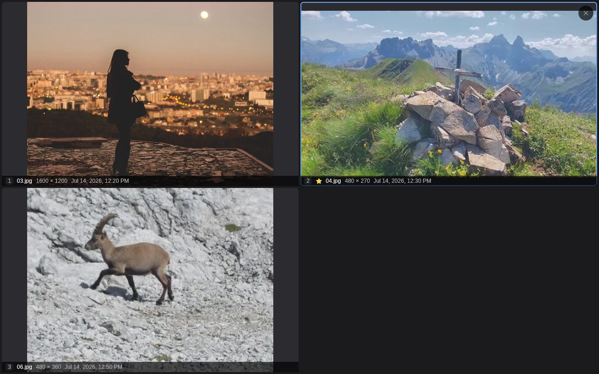

Free and open source · Linux · macOS · Windows
A local photo manager for everyone who misses Picasa
photon is a free Picasa alternative for Linux, macOS and Windows. It shows the photos in your folders and leaves the files as they are.
MIT licensed · No account or internet connection needed

Your files stay as they are
photon does not move, rename or change photos. Albums, crops and names are kept in its own library on your computer.
Fast
photon uses your graphics card to draw, so even very large libraries scroll smoothly.
Reads Picasa's data
The stars, people, albums and hidden photos you set in Picasa show up in photon, with nothing to export.
Features
Search
Search file and folder names, camera, lens, keywords, captions and dates, and narrow the results with terms. The ? in the box lists every term, and a search can be saved.
tag:zoois:starredcamera:canoniso:>=1600from:2019-06person:anna-draft

The viewer
The info panel shows camera data, a histogram, dates, location, people, keywords and albums. Zoom in to full size, and rotate or crop without changing the file.

Duplicates and look-alikes
photon finds identical copies and resized or re-saved versions of a photo. Up to four photos can be compared side by side.

Reorganise in your file manager
Rename or move photos and folders; they keep their albums, keywords, crops and names.
People
Optional face detection groups faces on your computer. Name them and search by name.
Albums and keywords
Make albums, and browse the keywords Lightroom, Bridge or digiKam wrote into your photos.
Hide photos
Hide a photo or a folder with H. It leaves every view; the file is not touched.
Rotate, crop, export
Rotate and crop without changing the file, play a slideshow, and export copies at full size or smaller for email.
Fast wherever your photos are
Photos on an external drive or a network share browse as quickly as the ones on your computer.
Coming from Picasa?
Add the folders Picasa watched. photon reads what Picasa stored beside your photos.
Read the full guide →- Stars, both ways — a star set in photon is written back, so Picasa sees it too.
- People you named — outlined on the photo in the viewer.
- Albums — kept up to date as you change them in Picasa.
- Hidden photos stay hidden.
- Captions and tags — saved in the photos themselves.
Download photon
Free and open source, for Linux, macOS and Windows.
Reads JPEG, PNG, GIF, WebP, TIFF, BMP and AVIF; plays MP4, M4V, MOV and (but on a Mac) WebM. The installers are not code-signed, so macOS and Windows warn the first time — here is how to open them.
Questions
Where does photon keep its library?
In a folder called io.github.bsg62.photon in your user data directory, and its thumbnails in your cache directory. Where that is on each system.
What should I back up?
Your photos, as always, and photon's library folder, copied while photon is closed. It holds what exists only in photon: albums, keywords you added, rotations and crops, names and settings.
What happens when I rename or move photos?
Inside the folders photon watches, a renamed or moved photo or folder keeps its albums, keywords, rotations and crops, and the names on its faces. What is and isn't followed.
Can I keep using Picasa alongside it?
Yes. Both read and write the same files, and photon picks up a change Picasa makes within a few seconds.